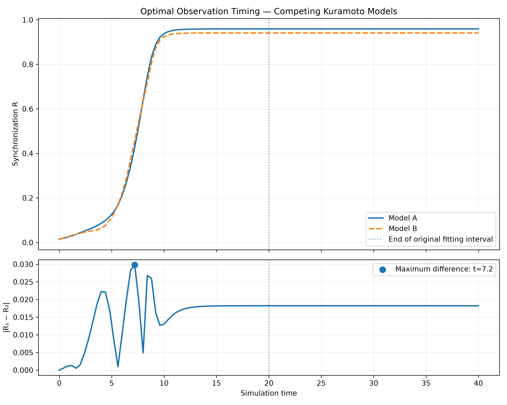

Computational Research / Mathematical Modeling
Synchronization Dynamics & Parameter Inference
Investigating how collective synchronization influences the recovery of dynamical parameters from noisy observations.
01 / Research Question
When is a dynamical system most informative about the parameters governing its behavior?
This investigation examines the relationship between synchronization, coupling strength, numerical sensitivity, and parameter identifiability in a population of coupled phase oscillators.
02 / Mathematical Framework
The system consists of 72 oscillators governed by the Kuramoto model.
Here, K represents coupling strength, ωᵢ represents the natural frequency of oscillator i, and R describes collective synchronization.
The numerical experiments use fourth-order Runge–Kutta integration with deterministic initial conditions and natural frequencies.
03 / Synchronization Landscape
A parameter sweep across 315 combinations of coupling strength and frequency dispersion reveals distinct regions of low and high coherence.

This is an operational finite-time threshold for the specified model and observation window, not a universal critical coupling constant.
04 / Inverse Parameter Estimation
The inverse problem attempts to recover coupling strength from observations of the synchronization trajectory.
The objective function measures the mean squared difference between observed and predicted synchronization trajectories.

Initial synthetic tests successfully recovered the generating coupling parameter under known initial conditions and known frequency dispersion.
05 / Measurement Noise
Repeated parameter-recovery experiments were conducted under four levels of synthetic measurement noise.

The results support accurate recovery under the tested assumptions, while demonstrating that measurement uncertainty influences parameter precision.
06 / Observation Timing and Information
Numerical sensitivity was evaluated as the local response of synchronization to changes in coupling.
Across three tested coupling regimes, the sampled time of maximum sensitivity shifted earlier as coupling strength increased.


The timing of observations therefore matters when attempting to infer dynamical parameters. The most informative window depends on the coupling regime and need not coincide with maximum coherence.
07 / Joint Parameter Inference
Coupling strength and frequency dispersion were estimated simultaneously from synthetic synchronization trajectories. The analysis investigated parameter compensation, numerical identifiability, and optimization reliability.

At the generating parameters, the sensitivity matrix was numerically full-rank, with a normalized condition number of approximately 4.08. This supports local first-order distinguishability under the tested observation protocol.
The existence of an alternative local minimum demonstrates that successful optimizer termination does not necessarily imply recovery of the globally best parameter combination. These findings are specific to the synthetic model and observation conditions investigated.
08 / Parameter Sensitivity & Uncertainty
How precisely can coupling strength and frequency dispersion be recovered from synchronization measurements? To investigate this question, we compared first-harmonic coherence, second-harmonic coherence, and their combined observations.
Two observables
The first-harmonic order parameter describes collective phase coherence. The second harmonic captures a different aspect of phase organization.
In our numerical experiments, the second harmonic provided stronger local parameter sensitivities around the generating parameters K = 1.373 and sigma = 0.700.
Local parameter sensitivity
We calculated numerical derivatives of both observables with respect to coupling strength and frequency dispersion. These derivatives form sensitivity matrices that describe how small parameter changes affect the observations.
| Observable | Smallest singular value | Condition number |
|---|---|---|
| R1 | 1.1783 | 4.68 |
| R2 | 3.0781 | 3.25 |
| Combined | 3.4773 | 3.27 |
Visualizing parameter uncertainty
Under a local linear approximation, the sensitivity matrix determines the approximate covariance of inferred parameters:

The combined observations produce the smallest local uncertainty ellipse. Compared with R2 alone, the predicted ellipse area decreases by approximately 22% under the assumed noise model.
Local precision versus global ambiguity
Improved local sensitivity does not guarantee globally unique parameter recovery. Our optimization experiments identified competing parameter solutions and demonstrated that numerical initialization can strongly affect recovery. The ellipses describe local uncertainty around the generating parameters; they do not represent distant alternative solutions.
09 / Analytical Sensitivity Equations & Numerical Validation
Rather than estimating parameter sensitivities exclusively through repeated simulations, we derived and integrated sensitivity equations directly from the Kuramoto model.
Governing equations
For zero phase lag, the oscillator dynamics can be written as:
The phase sensitivity to coupling strength is \(a_i=\partial\theta_i/\partial K\). Differentiating the governing equation gives:
Similarly, the sensitivity to frequency dispersion, \(b_i=\partial\theta_i/\partial\sigma\), satisfies:
Together, these equations propagate parameter sensitivities alongside the oscillator phases using fourth-order Runge–Kutta integration.
Numerical validation
At \(N=72\), \(K=1.373\), and \(\sigma=0.700\), the tangent-equation sensitivities agreed with central finite differences to within approximately \(6.6\times10^{-6}\) in the maximum absolute discrepancy across the four tested sensitivity series, using a finite-difference step of \(10^{-4}\).
Finite-difference convergence
Taylor expansion predicts that the central finite-difference derivative has second-order truncation error:
The observed convergence orders were approximately two across step sizes from \(10^{-2}\) to \(10^{-5}\). At \(h=10^{-6}\), the measured orders declined, consistent with increasing influence from floating-point cancellation.

Scope of the validation
The experiment verifies agreement between two numerical approaches to parameter sensitivity. Both approaches use RK4 integration, so a separate time-step refinement study is required to quantify integration error relative to the continuous-time differential equations.
10 / Numerical Integration Accuracy & RK4 Convergence
We investigated the numerical convergence of the fourth-order Runge–Kutta integrator used to evolve the Kuramoto system and its tangent sensitivity equations.
Mathematical prediction
For sufficiently smooth differential equations, RK4 has fourth-order global convergence over a fixed time interval.
\[ E(h)\approx Ch^4 \]Consequently, halving the integration step should reduce the leading error by approximately a factor of sixteen.
Experimental method
We simulated 72 oscillators with coupling strength \(K=1.373\) and frequency dispersion \(\sigma=0.700\). Integration steps ranged from \(0.08\) to \(0.0025\). All trajectories were evaluated at identical observation times.
To avoid assuming a numerical reference was exact, we compared successive refinements using the RMS difference:
\[ D(h)=\left\|R_h-R_{h/2}\right\|_{\mathrm{RMS}} \]We estimated the observed convergence order as:
\[ p=\log_2\left(\frac{D(h)}{D(h/2)}\right) \]Results
All six investigated quantities exhibited convergence orders close to four. Across 24 estimates, the observed orders ranged from approximately 3.979 to 4.007.

Interpretation
The observed convergence behavior supports the expected fourth-order numerical accuracy of RK4 for the tested Kuramoto system and tangent sensitivity equations.
These results demonstrate numerical consistency across the investigated integration steps. They do not constitute a direct comparison against an exact continuous-time solution, nor do they establish fourth-order accuracy under every possible model parameterization.
11 / Rotational Symmetry & Structural Observability
We investigated whether two Kuramoto systems evolving with opposite phase orientations can produce identical synchronization measurements.
Phase-reflection symmetry
For the zero-phase-lag Kuramoto system, consider the transformation:
\[ \theta_i'(t)=-\theta_i(t), \qquad \omega_i'=-\omega_i \]With the same coupling strength, the transformed trajectories satisfy the same form of governing equations.
For harmonic order parameters,
\[ Z_m(t)=\frac{1}{N}\sum_{j=1}^{N}e^{im\theta_j(t)}, \]phase reflection implies:
\[ Z_m'(t)=Z_m(t)^*, \qquad R_m'(t)=R_m(t). \]Thus, synchronization magnitudes cannot distinguish the original system from its reflected counterpart.
Experiment 27 — Synchronization measurements
We compared two deterministic systems of 72 oscillators at coupling strength \(K=1.373\) and frequency dispersion \(\sigma=0.700\). The second system used the negatives of the original initial phases and natural frequencies.

Collective angular velocity
The first-harmonic complex order parameter can be expressed as:
\[ Z_1(t)=R_1(t)e^{i\psi(t)}. \]Whenever \(R_1(t)>0\), the collective angular velocity is:
\[ \Omega(t)=\frac{d\psi}{dt} =\frac{\operatorname{Im}(Z_1^*\dot Z_1)}{|Z_1|^2}. \]Unlike synchronization magnitude, angular velocity changes sign under phase reflection:
\[ \Omega'(t)=-\Omega(t). \]
Implications for inverse inference
Measurements consisting only of \(R_1(t)\) and \(R_2(t)\) cannot distinguish phase-reflected systems when both the phases and natural frequencies are transformed. This is a structural observability limitation: information about rotational orientation has been discarded by the magnitude-only measurement process.
Collective phase evolution can distinguish the two reflected systems whenever the collective angular velocity is defined and nonzero. This symmetry does not, by itself, demonstrate non-identifiability of coupling strength and positive frequency dispersion within our original restricted two-parameter inference model.
12 / Limitations and Future Work
These findings are based on deterministic initial conditions, a finite oscillator population, synthetic observations, and specified noise models. Local sensitivity does not by itself establish global parameter identifiability.
Future investigations will consider joint estimation of coupling strength and frequency dispersion, uncertainty in initial conditions, and observation schedules designed to maximize parameter information.
This study investigates an abstract dynamical model; no equivalence with a particular biological regulatory mechanism has been established.
13 / Research Notes
Detailed numerical methods, experimental results, assumptions, and limitations are documented below.
Read Full Research Notes
Kuramoto Model: Coherence Boundary and Parameter Inference
Research objectives
- Estimate the finite-time high-coherence boundary.
- Verify the model's time-rescaling relationship.
- Recover coupling strength from synthetic synchronization observations.
Mathematical model
For N = 72 oscillators:
d(theta_i)/dt = omega_i + K R sin(psi - theta_i - alpha)
R exp(i psi) = (1/N) sum_i exp(i theta_i)
Natural frequencies are constructed as omega_i = sigma * xi_i.
For positive sigma, introducing tau = sigma*t and lambda = K/sigma gives:
d(theta_i)/d(tau) = xi_i + lambda R sin(psi - theta_i - alpha)
Numerical method
- Integrator: fourth-order Runge-Kutta
- Oscillators: 72
- Phase lag: 0
- Base numerical time step: 0.04
- Population initialization: deterministic
- Solver: shared kuramoto-core.js
Finding 1: Finite-time scaling
The previous scaling experiment demonstrated agreement of matched-rescaled-time mean synchronization measurements to approximately 1e-15 for the tested parameter combinations.
The original fixed-time comparison produced different synchronization values at identical K/sigma ratios.
This is consistent with the finite observation window affecting the apparent coherence boundary.
Finding 2: Matched-time coherence boundary
Measurement window: rescaled time 35 to 40.
High-coherence criterion: mean R >= 0.9
Highest adjacent failing grid value: lambda = 1.380000 mean R = 0.89922872
First passing grid value: lambda = 1.385000 mean R = 0.90034466
Grid spacing: 0.005
Number of later below-threshold grid points: 0
Interpretation: These are finite-time, finite-population numerical results. They do not establish an infinite-population critical coupling.
Finding 3: Synthetic parameter inference
Known frequency dispersion: 0.7 True coupling: 1.373 Estimated coupling: 1.373000 Absolute estimation error: 0.000000
Observations: 51 Observation interval: 0.4 Observation duration: 20 Deterministic noise amplitude: 0.003
Estimator: Minimize mean squared error between observed and simulated synchronization trajectories.
Best mean squared error: 4.416487e-6 Loss evaluated at true K: 4.416487e-6
Assumptions and limitations
- The oscillator model is known and correctly specified.
- Frequency dispersion is assumed known during inference.
- Initial phases and deterministic frequency construction are known.
- Observations are synthetic, not experimental.
- Only synchronization magnitude R(t) is observed.
- The search is a discrete coarse-to-fine grid search.
- Identifiability and uncertainty have not been established.
- The boundary threshold R >= 0.9 is an operational choice.
- Boundary monotonicity outside the tested grid is not established.
- No biological mechanism has been validated by these simulations.
Next investigations
- Plot the parameter-inference loss landscape.
- Estimate uncertainty under independent observation-noise realizations.
- Test identifiability when both K and sigma are unknown.
- Investigate sensitivity to initial-condition uncertainty.
- Compare inference from R(t) with inference from full phase observations.
Experiment 10: Information Across Observation Windows
Research question
How does the timing of synchronization observations affect the accuracy of coupling-strength inference?
Experimental design
- Model: 72 coupled Kuramoto oscillators
- Frequency dispersion: sigma = 0.7
- Phase lag: alpha = 0
- RK4 time step: 0.04
- Coupling strengths: 0.9, 1.373, 2.3
- Observation noise SD: 0.01
- Independent synthetic datasets: 12 per coupling
- Equal-sized early, middle and late windows
- Observations per window: 13
Numerical findings
K = 0.900 - Early: mean R = 0.0222, sensitivity = 0.05082 - Middle: mean R = 0.0992, sensitivity = 0.40049 - Late: mean R = 0.7729, sensitivity = 0.78454
K = 1.373 - Early: mean R = 0.0555, sensitivity = 0.15954 - Middle: mean R = 0.8633, sensitivity = 1.08469 - Late: mean R = 0.9591, sensitivity = 0.06891
K = 2.300 - Early: mean R = 0.2862, sensitivity = 0.46209 - Middle: mean R = 0.9866, sensitivity = 0.01245 - Late: mean R = 0.9866, sensitivity = 0.01213
Interpretation
Within the tested conditions, the observation window with greatest local sensitivity shifts earlier as coupling strength increases.
For strong coupling, late-time synchronization approaches saturation and becomes relatively insensitive to coupling strength.
This is consistent with increased uncertainty when estimating coupling from late-only measurements.
Limitations
- Results depend on the specified oscillator population.
- Initial conditions and frequency dispersion are known.
- Only three true coupling strengths were tested.
- Twelve noise realizations per condition limit precision.
- Some strong-coupling fits reached optimizer bounds.
- Local sensitivity is not proof of global identifiability.
- The model has not been calibrated to biological observations.
Time-resolved analysis
Associated files:
- time-resolved-information.js
- kuramoto-time-resolved-information.csv
- plot-time-information.py
These calculate and visualize synchronization and local coupling sensitivity at individual observation times.
The peak times and their interpretation should be recorded after checking the generated numerical output.
Observation Timing & Model Discrimination
Two parameter combinations were compared to investigate when synchronization observations most effectively distinguish competing dynamical models.

Under an independent Gaussian measurement-noise model, observations collected when predicted trajectories diverge provide greater expected discrimination between these two specified parameter combinations.
This result motivates model-guided observation timing. The selected time is specific to the models, noise assumptions, and temporal sampling resolution.
14 / Statistical Distinguishability Under Noise
Experiments 29A–29C investigate whether two reflection-related Kuramoto trajectories can be distinguished when collective angular velocity is observed with Gaussian measurement noise.
Observation model
The original and reflected systems have equal synchronization magnitudes but opposite collective angular velocities:
\[ R_m^A(t)=R_m^B(t), \qquad m=1,2 \] \[ \Omega_A(t)=-\Omega_B(t). \]We assume observations of the form
\[ Y_k=\Omega_H(t_k)+\epsilon_k, \qquad \epsilon_k\sim\mathcal N(0,s^2), \]where H denotes the generating hypothesis and the measurement errors are independent with known, common standard deviation s. Both hypotheses are assigned equal prior probability.
Classification and statistical separation
For two known mean trajectories with common independent Gaussian measurement noise, define:
\[ D^2= \frac{1}{s^2} \sum_{k=1}^{n} [\Omega_A(t_k)-\Omega_B(t_k)]^2. \]Under the specified assumptions, the Bayes-optimal classification accuracy is:
\[ P(\mathrm{correct})= \Phi\left(\frac{D}{2}\right), \]where Φ denotes the standard normal cumulative distribution function. This describes discrimination between the two specified hypotheses, not reconstruction of every oscillator phase.
Experiment 29A — Statistical benchmark
A constant-signal benchmark compared angular velocities +0.20 and −0.20 under Gaussian noise with s = 0.40. For n independent observations, the theoretical accuracy was
\[ P(\mathrm{correct})= \Phi\left(\frac{0.20\sqrt n}{0.40}\right). \]Monte Carlo simulations used 20,000 trials per hypothesis. The observed accuracies closely followed theory as the number of observations increased. The n = 25 result fell outside its individual approximate 95% sampling interval, illustrating that finite-sample validation does not require every trial estimate to lie inside its nominal interval.
Experiments 29B–29C — Time-dependent discrimination
The analysis was extended to the deterministic Kuramoto–Sakaguchi system with N = 72, K = 1.5, frequency dispersion σ = 0.7, phase lag α = 0.35, and RK4 step size 0.04. Four schedules used eight observations each.
| Observation schedule | Theory, s = 1.0 | Simulation, s = 1.0 |
|---|---|---|
| Early | 87.6521% | 87.7925% |
| Uniform | 88.3191% | 88.1575% |
| Late | 90.0397% | 89.9400% |
| High separation | 91.8918% | 91.6975% |
At lower noise levels, classification accuracy approached 100%, making differences between schedules difficult to resolve. Experiment 29C therefore examined higher synthetic noise levels. The preferred schedule depends on the underlying trajectories and noise assumptions.
15 / Information-Optimal Observation Design
Experiment 30 formalizes measurement scheduling as a constrained optimization problem. Rather than selecting individually strong measurements, it searches for the best admissible combination.
Information objective
For a schedule \(\mathcal T\), the KL divergence between the two Gaussian observation distributions is
\[ J(\mathcal T)= \frac{1}{2s^2} \sum_{t_k\in\mathcal T} [\Omega_A(t_k)-\Omega_B(t_k)]^2. \]When s is fixed, maximizing this divergence is equivalent to maximizing the unscaled squared-separation objective:
\[ S(\mathcal T)= \sum_{t_k\in\mathcal T} [\Omega_A(t_k)-\Omega_B(t_k)]^2. \]We selected exactly eight observation times on a discrete grid from t = 0.4 to 11.6, imposing a minimum separation of 0.4 simulation-time units between consecutive observations.
Dynamic programming
At each candidate time, the algorithm compares excluding that time with including it and skipping the subsequent forbidden interval. This recurrence gives an exact maximum-weight selection on the stated discrete grid.
The implementation was independently compared against exhaustive search on a smaller synthetic problem. It also verified the measurement count, time bounds, and minimum spacing.
Optimal observation schedule
\[ \mathcal T^*= \{2.60,\ 3.00,\ 5.76,\ 6.16,\ 6.56,\ 10.80,\ 11.20,\ 11.60\}. \]| Schedule | Unscaled objective S | Accuracy, s = 1.0 |
|---|---|---|
| Early | 5.361726 | 87.6521% |
| Uniform | 5.674782 | 88.3191% |
| Late | 6.592759 | 90.0397% |
| Greedy | 7.815748 | 91.8918% |
| Optimal DP | 7.830217 | 91.9112% |
Independent numerical cross-validation
The original trajectories were generated independently using Python and the website's JavaScript Kuramoto core. Across 301 samples, maximum absolute discrepancies were:
- R₁: 7.77 × 10⁻¹⁶
- R₂: 9.99 × 10⁻¹⁶
- Ω: 8.88 × 10⁻¹⁶
These results confirm close cross-implementation agreement for the tested parameter configuration. They do not establish global numerical accuracy or equivalence for all configurations.
Scope and limitations
Optimality is established only for the specified finite candidate grid, measurement budget, spacing constraint, and two known trajectories. The measurement model assumes independent Gaussian errors with known equal variance. The optimized schedule uses perfect knowledge of the predicted trajectories and may not remain optimal under parameter uncertainty or model misspecification.
Future work will investigate robust observation schedules when coupling, dispersion, and phase lag are uncertain.
16 / Detecting Model Misspecification
Experiment 32 investigates whether noisy observations generated by a modified Kuramoto system can be recognized as inconsistent with a restricted first-harmonic model family.
Alternative dynamical model
\[ \dot{\theta}_i = \omega_i + K_1R_1\sin(\psi_1-\theta_i-\alpha) + K_2R_2\sin(\psi_2-2\theta_i). \]The fitted model fixes K₂ = 0 and searches five possible values of K₁. Synthetic observations are generated at K₁ = 1.5 using K₂ = 0, 0.2, or 0.5.
Statistical method
Twenty-four collective-angular-velocity measurements were sampled over the simulation, with independent Gaussian noise of standard deviation 0.10. The test statistic is the smallest residual sum of squares over the five candidate first-harmonic models.
\[ T(Y)=\min_{K_1\in\mathcal K} \sum_k [Y(t_k)-\Omega_0(t_k;K_1)]^2. \]A conservative rejection threshold was constructed from separate simulated null datasets at each candidate K₁, using the maximum of their empirical 95th percentiles. The reported detection rates are based on independent evaluation simulations.
Results
| True K₂ | Mean residual sum of squares | Detection rate |
|---|---|---|
| 0.00 | 0.231058 | 4.00% |
| 0.20 | 0.241959 | 6.05% |
| 0.50 | 0.357889 | 43.70% |
Interpretation and limitations
These results evaluate a finite family of synthetic dynamical models, not a biological or physical ferrofluid experiment. Rejection indicates inconsistency with the tested restricted model family under the assumed observation and noise models; it does not identify the omitted mechanism uniquely.
Calibration covers only five candidate K₁ values and uses Monte Carlo estimates of the rejection threshold. The threshold is conservative across the tested grid, not a guarantee for all continuously varying parameters. The observed false-alarm and detection rates have finite Monte Carlo uncertainty.
The experiment and numerical results are available in the reproducible Python script and results CSV.
Numerical Methods
Model and initialization
Simulations used a finite population of 72 globally coupled Kuramoto oscillators, with zero phase lag. Initial phases and intrinsic frequencies were generated deterministically to permit reproducible comparisons between parameter combinations.
\[ \frac{d\theta_i}{dt} = \omega_i+KR\sin(\psi-\theta_i) \]The intrinsic frequencies were scaled by the dispersion parameter σ. The synchronization order parameter was calculated from the oscillator phases.
\[ R(t)= \left| \frac{1}{N} \sum_{j=1}^{N}e^{i\theta_j(t)} \right| \]Numerical integration
Oscillator trajectories were integrated using the classical fourth-order Runge–Kutta method (RK4). The joint-inference experiments used a time step of 0.04. Earlier experiments compared numerical integration methods and evaluated convergence under time-step refinement.
Inverse parameter estimation
Synthetic observations were generated from known coupling and dispersion parameters. Candidate parameter combinations were evaluated by comparing their predicted synchronization trajectories against the observations.
\[ J(K,\sigma)= \frac{1}{M} \sum_{j=1}^{M} \left[ R_{\mathrm{obs}}(t_j) - R(t_j;K,\sigma) \right]^2 \]Continuous least-squares optimization was performed from multiple initial guesses. The resulting solutions were evaluated using numerical gradient and Hessian calculations.
Identifiability and sensitivity
A finite-difference sensitivity matrix was constructed from the derivatives of predicted synchronization measurements with respect to coupling and dispersion. Its singular values were used to assess local first-order parameter distinguishability.
Positive Hessian eigenvalues and small numerical gradients supported the classification of two distinct local minima. This does not establish global uniqueness or complete identifiability.
Observation timing
Predicted synchronization trajectories from the generating and alternative parameter combinations were compared at discrete observation times. Their absolute differences were used to identify candidate times for discriminating between the two models.
\[ \Delta R(t)= |R_1(t)-R_2(t)| \]Under independent Gaussian measurement noise with standard deviation s, the expected log-likelihood ratio favoring the generating model over the alternative at one observation time is:
\[ D(t)= \frac{[R_1(t)-R_2(t)]^2}{2s^2} \]Scope and limitations
Results concern a deterministic, finite-population Kuramoto model with synthetic observations. Identifiability conclusions depend on the specified model, initialization, observation schedule, and numerical procedures. Biological interpretations require independently justified mechanistic models and experimental validation.